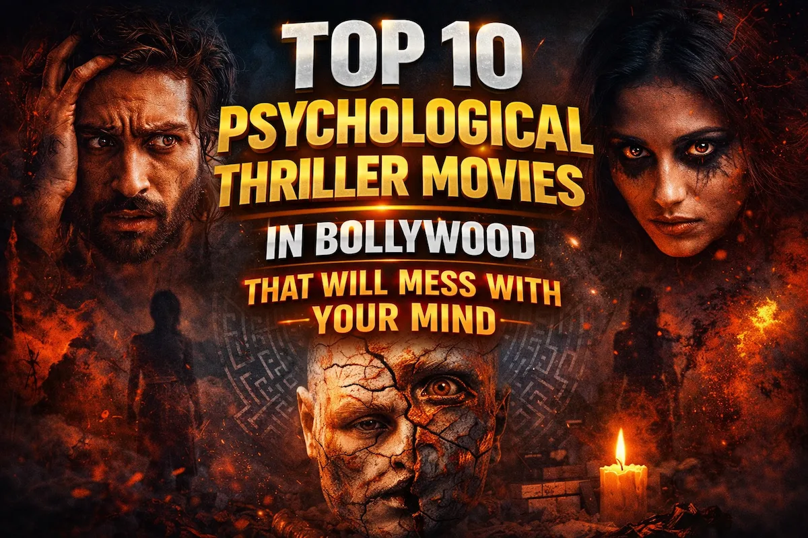
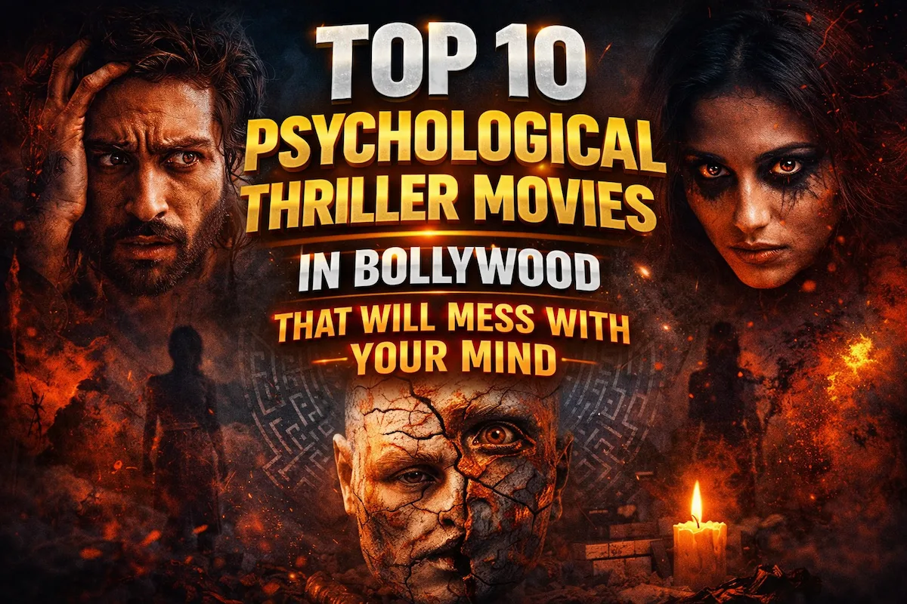

Top 25 Bollywood Romantic Movies of All Time – Part 1
Bollywood has a unique way of telling stories of love that stay with us long after the credits roll. From the innocence of first love to the depth of heartbreak, Hindi cinema has captured romance in all its shades. Romantic movies in Bollywood are not just about love between two people — they explore friendship, sacrifice, destiny, and the power of emotions. In this blog, we present 25 iconic Bollywood romantic movies, each one unforgettable in its own way.
1. Kal Ho Naa Ho (2003)
Click to watch the official trailer on YouTube
Kal Ho Naa Ho is an emotional journey of love, friendship, and selflessness. Naina, a serious young woman burdened by family struggles, meets Aman, a charming man who teaches her to embrace life with joy and optimism. Their friendship gradually blossoms into a deeply emotional love story.
The movie beautifully balances humor and heartbreak. Aman’s selfless love, his hidden illness, and his desire to see Naina happy even without him create unforgettable moments of both laughter and tears.
The music, including “Kal Ho Naa Ho” and “Har Ghadi Badal Rahi Hai”, enhances the emotions, making the story linger in viewers’ hearts. It remains a timeless Bollywood classic.
2. Veer-Zaara (2004)
Click to watch the official trailer on YouTube
Directed by Yash Chopra, Veer-Zaara is a story of love that transcends borders and time. Veer, an Indian Air Force officer, and Zaara, a Pakistani woman, fall in love despite cultural and political obstacles.
The film’s central theme is sacrifice and unwavering devotion. Veer’s silent dedication and Zaara’s courage show that true love can endure distance, time, and misunderstanding.
With unforgettable music and poetic dialogues, the film delivers a poignant experience. Shah Rukh Khan and Preity Zinta’s chemistry continues to captivate audiences, making it a quintessential romantic classic.
3. Barfi! (2012)
Click to watch the official trailer on YouTube
Barfi! tells the tale of a mute and deaf man and his love for Jhilmil, an autistic woman. Their story reflects love in its purest, most innocent form, highlighting emotional connection beyond words.
The movie shines through visual storytelling, expressive performances, and emotional depth. Each gesture and glance speaks louder than dialogue ever could.
With vibrant cinematography and a heartfelt soundtrack, Barfi! celebrates unconditional love and acceptance, making it a modern classic in Bollywood romance.
4. Befikre (2016)
Click to watch the official trailer on YouTube
Befikre captures carefree, passionate love set against the backdrop of Paris. Dharam and Shyra’s playful and spontaneous romance embodies a modern, fearless approach to relationships.
The film’s boldness lies in its candid depiction of romance, emphasizing fun, flirtation, and adventure in love. Yet it subtly reminds audiences about trust and emotional growth.
Coupled with energetic music and stylish visuals, Befikre reflects the contemporary youth’s perspective on love, making it unique among Bollywood romances.
5. OK Jaanu (2017)
Click to watch the official trailer on YouTube
OK Jaanu follows Adi and Tara, two young lovers navigating life, career ambitions, and modern relationships. Their love is tested by personal conflicts, career pressures, and uncertainty.
The realistic portrayal of love resonates with urban audiences. It highlights compromise, understanding, and emotional maturity in relationships.
With music by A.R. Rahman, the film combines melody and emotion seamlessly, making the romance both relatable and heartwarming.
6. Jab We Met (2007)
Click to watch the official trailer on YouTube
Jab We Met is a feel-good romantic tale about Geet, an energetic and talkative girl, and Aditya, a depressed businessman. Their chance encounter on a train sparks a journey of self-discovery and romance.
The charm of the film lies in Geet’s infectious spirit and Aditya’s gradual transformation, proving that love can inspire change and growth.
Memorable songs like “Tum Se Hi” and witty dialogues make the movie a timeless romantic comedy that continues to delight audiences.
7. Ae Dil Hai Mushkil (2016)
Click to watch the official trailer on YouTube
Ae Dil Hai Mushkil explores unrequited love and heartbreak through the story of Ayan and Alizeh. The film delves into emotional complexity, portraying love as passionate but often unattainable.
The narrative emphasizes that love is not always about possession but about experiencing deep emotional connections.
With a haunting soundtrack and intense performances, the film resonates with anyone who has felt the pain and beauty of love that is unreciprocated.
8. Yeh Jawaani Hai Deewani (2013)
Click to watch the official trailer on YouTube
This film celebrates friendship, dreams, and romance. Bunny and Naina’s journey reflects love in a modern context, highlighting emotional connection and personal growth.
The movie balances youthful energy, aspirations, and romance, showing how love evolves with time.
Its catchy music, vibrant visuals, and relatable characters make it a favorite among millennials, portraying love as a blend of excitement, responsibility, and companionship.
9. Tamasha (2015)
Click to watch the official trailer on YouTube
Tamasha is a unique love story intertwined with self-discovery. Ved and Tara’s encounter triggers a journey of emotional awakening, helping Ved confront societal pressures and personal insecurities.
The romance is profound because it inspires introspection and courage, making love a transformative force.
Ranbir Kapoor’s nuanced performance and A.R. Rahman’s soulful soundtrack elevate the film, creating a cinematic experience that is as introspective as it is romantic.
10. Aashiqui 2 (2013)
Click to watch the official trailer on YouTube
Aashiqui 2 portrays passionate love amidst personal struggles. Rahul and Aarohi’s romance is intense, filled with devotion but challenged by addiction and fame.
The film’s emotional depth makes it a modern tragic romance. Iconic songs like “Tum Hi Ho” intensify the emotional journey, making the audience feel every moment of joy and pain.
It highlights how love can be both inspiring and destructive, showing the vulnerability inherent in deep emotional connections.
11. Rockstar (2011)
Click to watch the official trailer on YouTube
Rockstar tells the story of Jordan, a passionate musician whose love for Heer inspires both his music and emotional turmoil. Their romance is intense, filled with longing, heartbreak, and transformation.
The film explores how love can push someone to greatness yet also bring immense pain. Jordan’s journey reflects the fine line between passion for art and devotion to love.
With soulful music by A.R. Rahman and Ranbir Kapoor’s raw performance, Rockstar portrays love as a force that is simultaneously inspiring, destructive, and unforgettable.
12. Love Aaj Kal (2009)
Click to watch the official trailer on YouTube
Love Aaj Kal juxtaposes two love stories from different eras, showing how love remains timeless despite changing circumstances. Jai and Meera’s modern romance faces career, misunderstandings, and personal growth challenges.
The film highlights that true love is about understanding, compromise, and patience. The contrast between contemporary and classic relationships emphasizes the universality of emotions.
Melodious music and realistic storytelling make this film relatable to audiences navigating love in today’s world while appreciating nostalgia.
13. Dilwale Dulhania Le Jayenge (1995)
Click to watch the official trailer on YouTube
DDLJ is arguably Bollywood’s most iconic love story, following Raj and Simran as they navigate family traditions and personal desire. Their romance combines charm, wit, and emotional depth.
The film emphasizes love built on mutual respect, patience, and understanding. It also celebrates cultural values, making it relatable across generations.
With evergreen music, unforgettable dialogues, and Shah Rukh Khan’s charisma, DDLJ has become a benchmark for romantic storytelling in Indian cinema.
14. Saathiya (2002)
Click to watch the official trailer on YouTube
Saathiya tells the story of Aditya and Suhani, exploring love’s challenges in marriage and early adulthood. The film portrays realistic relationship struggles, including misunderstandings, societal pressure, and personal growth.
Its strength lies in portraying love as evolving and requiring commitment, patience, and empathy. The emotional moments make audiences reflect on the complexities of real-life romance.
With memorable music by A.R. Rahman and authentic performances, Saathiya remains one of Bollywood’s heartfelt romantic dramas.
15. Hum Tum (2004)
Click to watch the official trailer on YouTube
Hum Tum is a playful romantic comedy following Karan and Rhea over several years, exploring friendship evolving into love. Their chemistry, misunderstandings, and reunions create lighthearted yet meaningful moments.
The film emphasizes timing, fate, and growth in relationships, showing how love can develop gradually and unexpectedly.
Catchy songs, witty dialogues, and relatable scenarios make Hum Tum a modern romantic favorite that balances humor and heart.
16. Jaane Tu Ya Jaane Na (2008)
Click to watch the official trailer on YouTube
This coming-of-age romance follows Jai and Aditi, best friends unaware of their feelings for each other. Their journey highlights how love often grows quietly through deep friendship.
The film’s charm is its relatability — depicting the innocence, confusion, and excitement of young love. It captures the essence of discovering love in everyday moments.
With soothing music and relatable characters, Jaane Tu Ya Jaane Na has become a cult favorite for millennials and romantic film enthusiasts alike.
17. Ta Ra Rum Pum (2007)
Click to watch the official trailer on YouTube
A lesser-known romantic story, Ta Ra Rum Pum revolves around love tested by life’s uncertainties. It follows a couple balancing romance with family responsibilities, personal dreams, and emotional resilience.
The movie emphasizes that love is not just passion but also partnership and support during challenging times.
With heartwarming moments, uplifting music, and relatable themes, the film portrays love as enduring even amidst adversity.
18. Kabhi Alvida Naa Kehna (2006)
Click to watch the official trailer on YouTube
KANK explores unconventional romance, focusing on love that challenges societal norms and personal ethics. Dev and Maya’s forbidden love unfolds amidst marriage, friendship, and moral dilemmas.
The film’s strength is its emotional honesty — it portrays love’s complexity without idealization, showing how desires can conflict with responsibilities.
With melodious music and layered performances, Kabhi Alvida Naa Kehna presents romance as a multi-dimensional, human experience.
19. Laila Majnu (2018)
Click to watch the official trailer on YouTube
A modern adaptation of the legendary love story, Laila Majnu portrays love as passionate, obsessive, and transcendent. Laila and Qais’ romance is intense, defying family opposition and societal constraints.
The film captures the agony and ecstasy of true love, emphasizing devotion, sacrifice, and heartbreak.
With expressive performances and soulful music, Laila Majnu reaffirms why this tale remains timeless, appealing to audiences seeking passionate romance.
20. Devdas (2002)
Click to watch the official trailer on YouTube
Devdas tells the tragic tale of Dev and Paro, whose love is doomed by societal pressures and pride. Their passion, longing, and despair create one of Bollywood’s most iconic romantic tragedies.
The film is renowned for its grandeur, poetic dialogues, and emotional depth, showing how love can be intense yet heartbreaking.
With unforgettable music and striking visuals, Devdas remains a benchmark for cinematic romance and tragic love stories.
21. Hum Dil De Chuke Sanam (1999)
Click to watch the official trailer on YouTube
This film explores love, passion, and sacrifice through the story of Nandini, Sameer, and Vanraj. Nandini’s torn heart between love and duty creates a deeply emotional narrative.
The movie’s charm lies in its portrayal of love as multifaceted — romantic, devotional, and sacrificial. The characters’ emotional journeys resonate with audiences.
Coupled with stunning music and vibrant visuals, the film remains a quintessential Bollywood romantic drama.
22. I Hate Luv Storys (2010)
Click to watch the official trailer on YouTube
A quirky romantic comedy, this film follows Jay and Simran, exploring love with humor, sarcasm, and playful banter. Their evolving relationship portrays romance in a modern, relatable context.
The movie emphasizes that love can be fun, spontaneous, and full of surprises, showing that chemistry and friendship are key to lasting romance.
Catchy music, witty dialogues, and engaging performances make it a delightful addition to contemporary Bollywood romance.
23. Raanjhanaa (2013)
Click to watch the official trailer on YouTube
Raanjhanaa is an intense tale of unrequited love and devotion. Kundan’s love for Zoya remains steadfast despite obstacles, societal pressures, and heartbreak.
The film portrays love as passionate, sometimes painful, and transformative, showing that true affection often requires courage and sacrifice.
Powerful performances, soulful music, and strong storytelling make it a modern classic in Indian romantic cinema.
24. Chennai Express (2013)
Click to watch the official trailer on YouTube
Chennai Express blends romance with comedy and adventure. Rahul and Meenamma’s unexpected journey turns into a heartwarming love story.
The film shows love blossoming through friendship, trust, and shared experiences, highlighting that romance can be joyful, lighthearted, and transformative.
With vibrant music, picturesque visuals, and Shah Rukh Khan’s charm, it delivers a fun-filled yet emotionally satisfying romance.
25. Om Shanti Om (2007)
Click to watch the official trailer on YouTube
Om Shanti Om is a grand Bollywood spectacle combining romance, reincarnation, and revenge. Om’s love for Shantipriya transcends life and death, creating a timeless story of eternal love.
The film celebrates devotion, destiny, and the power of love to overcome tragedy. Its larger-than-life presentation, songs, and emotional depth make the romance unforgettable.
With iconic performances, memorable music, and a mix of drama and comedy, Om Shanti Om remains one of Bollywood’s most beloved romantic films.
Conclusion
Bollywood has gifted audiences a remarkable array of romantic films that explore love in every shade, playful, passionate, tragic, or transformative. These 25 movies exemplify why Hindi cinema remains a global benchmark for storytelling about the heart. From first love to eternal devotion, Bollywood romance continues to inspire, entertain, and move viewers across generations.
More from CineNostalgia

 
